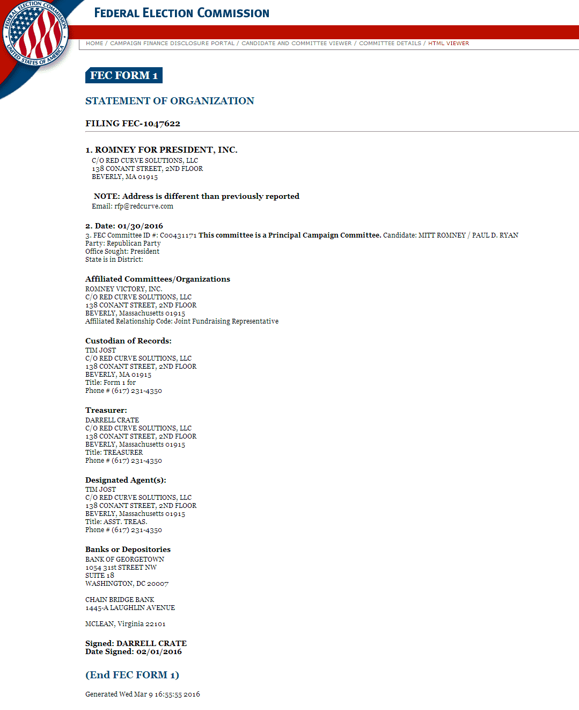

Daryush "Roosh" Valizadeh created ROK in October 2012. You can visit his blog at RooshV.com or follow him on Twitter and Facebook.


An explosive filing with the FEC dated January 31, 2016 suggests that Mitt Romney will perform a coup d’etat for the party nomination during the Republican National Convention in Cleveland this July. The Republican establishment is in a panic that Donald Trump has a commanding delegate lead over their preferred candidate Marco Rubio, and is crafting a plot to make sure Trump is excluded from the Presidential election.
The election filing in question was released on the FEC’s web site in early March (the first public mention of it was on March 3). Called a Statement Of Organization, it is required to start a campaign committee that leads to a Presidential run (PDF). Paul Ryan is listed as Romney’s running mate. Here is a screenshot from the FEC:

The names and organizations within the filing have had prior relationships with Mitt Romney, such as Red Curve Solutions, a consulting firm that worked with him in one of his previous losing campaigns:
Red Curve was founded during the 2008 election cycle by Bradley Crate, the Deputy CFO of the Romney for President campaign. He recognized the need for a more structured approach to campaign compliance and treasury management.
Darrell Crate, the signer of the filing, has worked with Romney in both of his losing campaigns:
Mr. Crate served as Treasurer and Executive Committee Member of the Romney for President campaign in 2012, a role that he also held during the 2008 cycle. From 2003 to 2007, Darrell served as the Chairman of the Massachusetts Republican Party.
You would think that Romney would find a new team that is capable of putting him in the White House, but for a man who hasn’t been involved in politics in years, winning is not at all his goal.
It doesn’t take a political strategist to see what’s going to happen when the Republican establishment is divulging its plan to the public:
In order to defeat Donald Trump, The Weekly Standard’s Bill Kristol admits he is prepared to hand Hillary Clinton the Oval Office. On Wednesday’s “Morning Joe,” the Republican Establishment leader laid out his plot to deprive Trump of the 50% of delegates necessary to secure the nomination. From there, the idea is to go into a brokered convention and cut a kamikaze deal that awards enough delegates to an “acceptable” candidate (who will have won far fewer votes, states, and delegates than Trump).
The problem with the Establishment brokering a behind-closed-door deal that hands the nomination to a Sen. Marco Rubio (R-FL) is that the backlash against the Republican Party is almost certain to hand Hillary Clinton the presidency.
Based on the FEC filing above, it’s clear that the plan involves skipping the nomination over Little Rubio and handing it to Romney, who is guaranteed to lose in an election against Hillary Clinton. The Republican establishment, led by neoconservative Bill Kristol, is now acting as an ally to Hillary in order to subvert the will of the American people and their Constitutional right to vote for President.
Even more appalling, establishment cuckservatives are meeting right now in a secret Georgia retreat to finalize their plans for giving the nomination to anyone but Trump:
In a last-ditch effort to stop Donald Trump from trampling all over their presidential primary, billionaires, tech leaders, and establishment Republicans met last weekend on a private resort on Sea Island, Georgia, to come up with a plan.
The Huffington Post reports that attendees of the American Enterprise Institute’s World Forum included Senate Majority Leader Mitch McConnell, political operative Karl Rove, House Speaker Paul Ryan, several members of Congress, and business luminaries like Apple’s Tim Cook, Google’s Larry Page, Napster creator Sean Parker, New York Times publisher Arthur Sulzberger, and Tesla founder and libertarian clean energy advocate Elon Musk, who really, really hates Donald Trump. Bill Kristol, editor of the conservative Weekly Standard, was also in attendance at the off-the-record meeting, and he reportedly wrote in an email that “A specter was haunting the World Forum — the specter of Donald Trump.”
The above list of names is a who’s who of the richest Trump haters in America. It’s safe to assume that they have called this emergency meeting to finalize their plans for Romney’s strategem in July. Since Romney has shown he’s incapable of winning, we can only guess as to the monetary benefits he could receive for participating in the hijacking of the 2016 Presidential election.
A brokered convention occurs when a candidate does not receive the required number of delegates by the time of his party’s convention. For the Republican race, a candidate must receive 1,237 delegates. Donald Trump currently has 458 and Ted Cruz has 359, with 1,435 delegates remaining.
The Republican establishment will likely try to split the vote as much as possible between Trump and Cruz until the time of the convention to ensure that neither anti-establishment candidate secures 1,237 delegates. If that happens, there will be a “brokered” convention in July where “democracy” is put into action and delegates can vote for whomever they wish. It is becoming clear that their man will be Mitt Romney, a beloved cuckservative whose main mission in life so far is ensuring that Democrats remain in the White House.
All the passion and energy into Donald Trump’s unexpectedly meteoric campaign will be for nothing when the elites remind us in the proceeding months who’s really in charge. The fact that Trump has the support of millions of patriotic Americans who want to make American great again will not matter when the masters of the United States exert control over their impotent slaves. Perhaps it was naivety on the part of Trump supporters to think that a man with immeasurable will, strength, and high energy could fight the establishment and usher in a new age of genuine American conservatism.
Or maybe he will be able to fight it.
Trump faces a battle with tough odds, but if he can’t usher in this peaceful political revolution, who can? Either we see the rightful candidacy of Donald Trump this fall or the destruction of a Republican party that is blatantly selling out its own constituents for their pro-Israel and moneyed interests. We won’t have to wait long to find out what happens.
Postscript: Twitchy claims that the form is just an address change. We’ll see soon enough who the establishment wants to replace Trump with.
Read Next: The American Conservative Establishment Is Collapsing